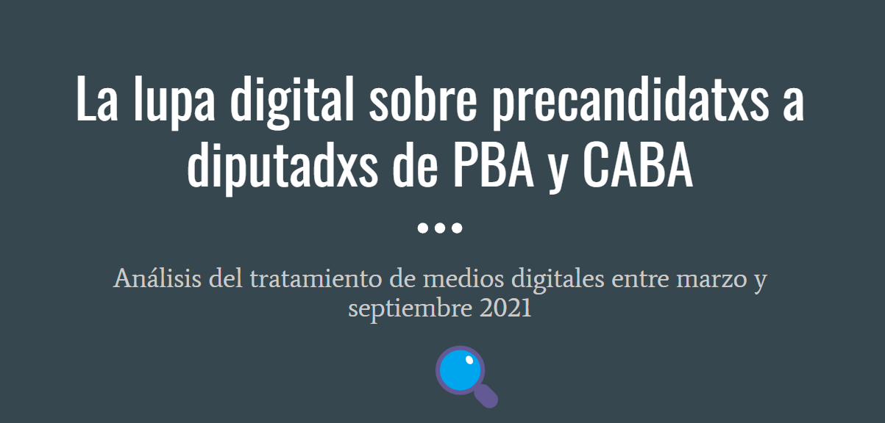

Ariana Bardauil
Sobre mi
Publicaciones
Proyectos
Cursos, talleres & charlas
CV
Latest content
Categories
All
(18)
Academia
(6)
Acceso a la información pública
(2)
Docencia
(1)
Estadística
(2)
Federalismo
(1)
NLP
(5)
Políticas públicas
(1)
R
(7)
Salud
(1)
Shiny
(2)
Transparencia activa
(2)
charla
(2)
comunidad
(2)
datos sensibles
(1)
dicen los medios
(1)
quarto
(2)
salud
(1)
shiny
(1)
taller
(1)
Order By
Default
Title
Date - Oldest
Date - Newest
Author
Club de lectura Mastering Shiny
quarto
shiny
comunidad
Presentación de bienvenida al club de lectura organizado por R-Ladies Buenos Aires y R en Buenos Aires, en torno al libro
Mastering Shiny
de Hadley Wickham.
Mar 5, 2025
R en Red: ARcenso, Oportunidades y Comunidad
quarto
charla
R
comunidad
El
20 de diciembre de 2024
, participé como oradora en el evento
R en Red: ARcenso, Oportunidades y Comunidad
, un meetup organizado por
R-Ladies Buenos Aires
y
R en Buenos…
Andrea Gomez Vargas, Betsabe Cohen, Emanuel Ciardullo, María Nanton, Jesica Formoso, Ariana Bardauil
Dec 20, 2024
Big data, medios digitales y autogestión: cómo trabajar con millones de noticias
dicen los medios
NLP
charla
Participamos en el Meetup Big Data, medios digitales y código abierto qué tuvo por objetivo contar el trabajo que realizamos desde Dicen los Medios con R, Python, JavaScript…
Manuel Iglesias, Joaquín Lovizio Ramos, Ariana Bardauil, Santiago Marta y Sofía Rubinstein
Dec 2, 2024
Experiencias en el uso de R para la automatización de procedimientos administrativos: el Recupero de gastos en el sistema público de salud de la Ciudad de Buenos Aires
Academia
Salud
El recupero de gastos en la salud pública de la Ciudad de Buenos Aires busca recuperar los costos de la atención de pacientes con cobertura de salud que reciben servicios en…
M. C. Nanton, Ariana Bardauil & M. Rodríguez Tablado
Nov 22, 2024
R para la demografía social: un taller aplicado a la EPH
taller
R
Taller organizado por la Cátedra de Demografía Social de la licenciatura de Ciencia Política - UNLaM, el Núcleo de Innovaciòn Social & R en Buenos Aires.
Andrea Gomez Vargas, Betsabe Cohen & Ariana Bardauil
Oct 29, 2024
Estrategias y procedimientos de protección de datos personales en productos que contienen información sanitaria
datos sensibles
salud
Acceso a la información pública
Desde 2016, en la Ciudad Autónoma de Buenos Aires (CABA) se lleva adelante la implementación de Sistemas de Información de Salud (SIS) en el subsistema público, lo cual…
Maria Cecilia Palermo, Ariana Bardauil, Maria Cristina Nanton, Sabrina Laura López, María Belén Islas
Oct 10, 2024
Tablero Dicen los Medios
Shiny
R
NLP
Dicen los medios. Un tablero que te permite analizar qué, cómo y cuanto hablan los medios digitales de determinado tema o tópico
Ariana Bardauil
Nov 25, 2023
R para Cientistas Sociales: Taller de R en la Universidad Nacional de La Matanza
Docencia
R
A a lo largo de esta jornada abordaremos el uso de R para las ciencias sociales.
No se requiere experiencia previa en programación ni análisis de datos,
ya que este taller…
Ariana Bardauil
Nov 23, 2023
Shiny App - Cobertura de Salud en CABA
R
Shiny
Analizá la Cobertura de Salud en la Ciudad Autónoma de Buenos Aires (CABA)
Ariana Bardauil
Nov 17, 2023
Jornadas de sociología de la UBA 2023 - SAAP: Análisis del discurso: Similitudes y diferencias en discursos vinculados a educación entre candidatos a presidente y diarios digitales en Argentina entre abril 2022 y abril 2023
Academia
NLP
En el contexto de las próximas elecciones presidenciales y legislativas en Argentina, que se llevarán a cabo en octubre de este año, el análisis de los discursos políticos y…
Ariana Bardauil
Nov 6, 2023
Guía Federal de Transparencia Activa
Transparencia activa
Políticas públicas
Federalismo
Este documento fue elaborado de manera colectiva en el marco de la Comisión de Transparencia del Consejo Federal para la Transparencia, presidido por la Agencia de Acceso a…
Comisión de Transparencia del Consejo Federal para la Transparencia
Oct 15, 2023
Estrategia de evaluación del Índice de Transparencia Activa
Transparencia activa
Acceso a la información pública
Este informe fue elaborado junto a colegas durante mi paso por la Agencia de Acceso a la Información Pública, en el marco de una estrategia de evaluación impulsada por la…
Emiliano Arena, Ariana Bardauil & Catalina Byrne
Sep 10, 2023
Cambios y continuidades en el Ministerio de Desarrollo Social de la Nación (2015 - 2019) durante la gestión Cambiemos en Argentina
Academia
Capítulo 5 del libro
“Transformaciones en la estructura del Estado en el gobierno de Cambiemos (2015-2019). Un análisis de las funciones, el modelo de gestión y las…
Ariana Bardauil
Aug 14, 2023
Análisis de Intención de Voto en Bs. As y Córdoba
R
Estadística
Analisis de la intención de voto para las elecciones de 2015
Jul 25, 2023
XVI Congreso Nacional de Ciencia Política - SAAP: Análisis de discurso
Academia
NLP
Análisis de discurso: Similitudes y diferencias en discursos vinculados a inseguridad entre precandidatos a presidente y diarios digitales en Argentina (2022-2023)
Ariana Bardauil
Jul 17, 2023
Análisis de Google Play store
R
Estadística
Analisis del mercado de apps de Google Playstore
Jul 25, 2022
VI Congreso Internacional del CLAD sobre Reforma del Estado: El Empleo Público del Futuro
Academia
Hallazgos Y experiencias acerca del empleo público nacional en situación de pandemia en Argentina, 2020-2021: abordajes para el diseño del empleo público del futuro
Ariana Bardauil
Nov 17, 2021

XV Congreso Nacional de Ciencia Política - SAAP: La lupa digital
Academia
NLP
La lupa digital sobre los precandidatos de la Provincia de Buenos Aires y CABA a diputados nacionales”. Análisis del tratamiento de medios digitales entre marzo y septiembre”
1
Ariana Bardauil
Aug 17, 2021
No matching items